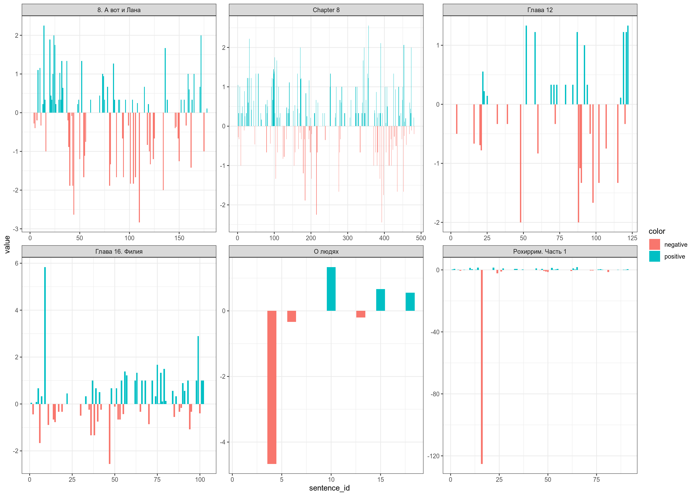
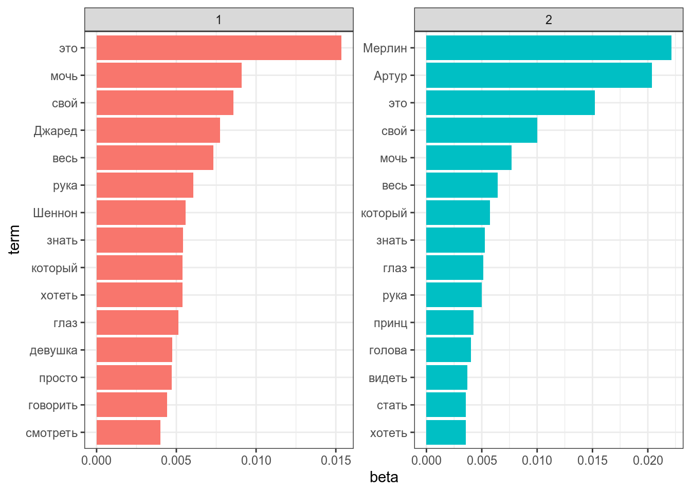

6 Анализ текста
6.1 Данные
Для работы мы воспользуемся двумя датасетами:
- Фэндом Мерлин
me <- read_csv("data_ficbook_merlin.csv")
me- Фэндом 30 seconds to mars
mars30 <- read_csv("data_ficbook_30_seconds_to_mars.csv")
mars30Возьмем выборку в 50 фанфиков (на моем компьютере это обрабатовалось минуты 4), соединим, лемматизируем и уберем стопслова.
library(stopwords)
library(udpipe)
rus <- udpipe_load_model("russian-syntagrus-ud-2.4-190531.udpipe")
set.seed(42)
me %>%
sample_n(50) %>%
rename(doc_id = subtitle) %>%
udpipe(object = rus, parallel.cores = 7) %>%
mutate(fandom = "merlin") ->
me_sample
set.seed(42)
mars30 %>%
sample_n(50) %>%
rename(doc_id = subtitle) %>%
udpipe(object = rus, parallel.cores = 7) %>%
mutate(fandom = "mars30") ->
mars30_sample
me_sample %>%
bind_rows(mars30_sample) %>%
filter(!str_detect(lemma, "\\W|\\d")) %>%
anti_join(tibble(lemma = stopwords(language = "ru"))) %>%
select(doc_id, sentence_id, lemma, fandom) ->
all_texts
all_textsПовторите эти действия с сэмплами из других фандомов. Лучше использовать высокорейтинговые фанфики.
6.2 tf-idf
tf-idf — важная мера, которая позволяет выделять важные для текста слова.
\[tf = \frac{количество\ употреблений\ единицы\ в\ тексте}{количество\ единиц\ в тексте}\] \[idf = log\left(\frac{количество\ документов\ в\ корпусе}{количество\ документов\ с\ исследуемой\ единицей}\right)\] \[TfIdf = tf \times idf\] Для начала нарисуем топ 10 слов в обоих фандомах:
library(tidytext)
all_texts %>%
count(lemma, fandom) %>%
mutate(lemma = reorder_within(lemma, n, fandom)) %>%
group_by(fandom) %>%
top_n(10) %>%
ggplot(aes(n, lemma))+
geom_col()+
facet_wrap(~fandom, scales = "free")+
scale_y_reordered()
А теперь сравним получившееся с мерой tf-idf:
library(tidytext)
all_texts %>%
count(lemma, fandom) %>%
bind_tf_idf(lemma, fandom, n) %>%
group_by(fandom) %>%
top_n(10) %>%
mutate(lemma = reorder_within(lemma, tf_idf, fandom)) %>%
ggplot(aes(tf_idf, lemma))+
geom_col()+
facet_wrap(~fandom, scales = "free")+
scale_y_reordered()
Повторите со своей выборкой фанфиков. Лучше использовать высокорейтинговые.
6.3 Предиктивный ввод текста
На прошлых занятиях мы разобрались, что пакет tidytext позволяет делить не только на отдльные слова, но и смотреть на биграммы. Частотность биграмм можно использовать в подсказке слова, которую мы видим в наших телефонах:
set.seed(42)
me %>%
sample_n(50) %>%
unnest_tokens("bigram", text, token = "ngrams", n = 2) %>%
separate(bigram, into = c("word_1", "word_2"), " ") %>%
count(word_1, word_2, sort = TRUE) ->
bigramsТеперь у нас есть биграмы:
bigrams %>%
filter(word_1 == "однажды")bigrams %>%
filter(word_1 == "мерлин")bigrams %>%
filter(word_1 == "не")bigrams %>%
filter(word_1 == "мог")bigrams %>%
filter(word_1 == "понять") %>%
head()bigrams %>%
filter(word_1 == "что") %>%
head()bigrams %>%
filter(word_1 == "он") %>%
head()bigrams %>%
filter(word_1 == "снова") %>%
head()bigrams %>%
filter(word_1 == "попытался") %>%
head()bigrams %>%
filter(word_1 == "встать") %>%
head()Вот мы и получили предложение “Однажды Мерлин не мог понять, что он снова пытался встать.” На большом корпусе результаты будут лучше, но легко предсатвить, как сделать из этого рабочую функцию. Можно переиначить задачу и работать с символами, тогда это будет ближе к T9 на современных телефонах.
Попробуйте получить осмысленное предложение на основе своих фанфиков. Лучше использовать высокорейтинговые.
6.4 Анализ тональности
- Linis Crowd
- лемма
- значение
- среднеквадратичное отклонение
- РуСентиЛекс:
- слово или словосочетание,
- часть речи или синтаксический тип группы,
- слово или словосочетание в лемматизированной форме,
- тональность: позитивная (positive), негативная(negative), нейтральная (neutral) или неопределеная оценка, зависит от контекста (positive/negative),
- источник: оценка (opinion), чувство (feeling), факт (fact),
- если тональность отличается для разных значений многозначного слова, то перечисляются все значения слова по тезаурусу РуТез и дается отсылка на сооветствующее понятие - имя понятия в кавычках.
Мы будем использовать датасет, составленный на базе Linis Crowd
ru_sentiments <- read_csv("https://raw.githubusercontent.com/agricolamz/2020_HSE_DPO/master/data/ru_sentiment_linis-crowd.csv")
set.seed(42)
all_texts %>%
filter(doc_id %in% sample(unique(all_texts$doc_id), 6)) %>%
group_by(doc_id) %>%
left_join(ru_sentiments, by = c("lemma" = "words")) %>%
mutate(value = ifelse(is.na(value), 0, value)) %>%
group_by(doc_id, sentence_id) %>%
summarise(value = sum(value)) %>%
mutate(color = ifelse(value >= 0, "positive", "negative")) %>%
ggplot(aes(sentence_id, value, fill = color))+
geom_col()+
facet_wrap(~doc_id, scales = "free")Попробуйте получить осмысленное предложение на основе своих фанфиков. Лучше использовать высокорейтинговые.
6.5 Тематическое моделирование
LDA (Latent Dirichlet allocation) — один из базовых способов, используемый в тематическом моделировании. Основное идея алгаритма, заключается в том, что каждый текст может являтся смесью тем, а каждая тема имеет вероятность более высокую вероятность генерировать некоторые слова, и более низкую вероятность генерировать слова общие для всех тем. На вход подается посчитанный список слов для каждого текста.
library(topicmodels)
all_texts %>%
count(doc_id, lemma) %>%
cast_dtm(doc_id, lemma, n) %>% # особая функция
LDA(k = 2, # количество тем
control = list(seed = 42) # повзоляет воспроизвести один и тот же анализ, можно убрать
) ->
ldaПосмотрим, какие слова характерны для какой темы (т. е. самые частотные в теме):
lda %>%
tidy(matrix = "beta") %>% # приводим модель в tidy формат
group_by(topic) %>%
top_n(15, beta) %>%
ungroup() %>%
mutate(term = reorder_within(term, beta, topic)) %>%
ggplot(aes(term, beta, fill = factor(topic))) +
geom_col(show.legend = FALSE) +
facet_wrap(~topic, scales = "free") +
coord_flip() +
scale_x_reordered()
Посмотрим, какие слова специфичны для каждой из тем (т. е. частота значительно больше в одной теме, чем в другой):
lda %>%
tidy(matrix = "beta") %>%
mutate(topic = paste0("topic", topic)) %>%
spread(topic, beta) %>%
filter(topic1 > .006 | topic2 > .002) %>% # эти значения нужно вручную подбирать
mutate(log_ratio = log2(topic2 / topic1),
term = fct_reorder(term, log_ratio)) %>%
ggplot(aes(log_ratio, term))+
geom_col()
Посмотрим на распределение текстов по темам:
lda %>%
tidy(matrix = "gamma")